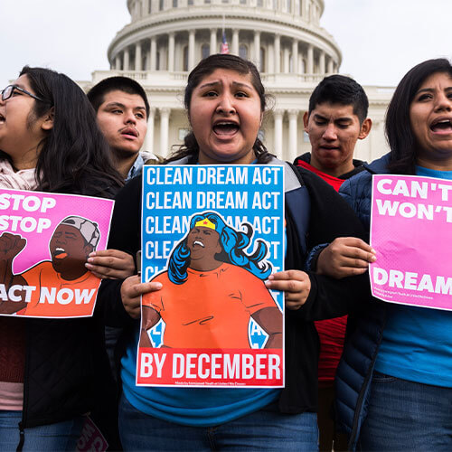

Learn more...
About #DACA & what You Can Do?
Some Sources

- Quick tips/(pdf)
- Protect Yourself and Your Family from Immigration Raids.
-
DHS/Napolitano Memorandum
Exercising Prosecutorial Discretion with Respect to Individuals Who Came to the United States as Children
Dreams on Hold
- This article provides accurate information about DACA, such as updated statistics and facts. Keeping the audience update without the need of long statements and extra information. I might use it for my visual aid because it covers the immigration process as a whole.
-
DHS/Napolitano Memorandum
Wyler, Grace. "Dreams on Hold." Orange County Register, Jan 27, 2017, ProQuest Central,
Deferred Action for Childhood Arrivals

- The journal article provides an overall of the program. Pros and cons, restrictions, laws and the whole process in an impartial way. Follow by accurate information at the time DACA was created.
- Deeply explaining whats it and whats it not, as well as general DACA eligibility guidelines and the program requirement process(Form I-821D). Its a deferral of deportation and a documenting of the undocumented"low-priority" individuals.
-
ProQuest link
Fiflis, Christina A. "Deferred Action for Childhood Arrivals." GPSolo, vol. 30, no. 5, 2013, pp. 28-32, ProQuest Central.
LIFE IN LIMBO FOR AN IMMIGRANT TEEN: Deferred dreams

- This article might be seen pro DACA because it explain some of the reasons of why DACA should not be taking down. By exposing multiple opportunities that the DACA program has to offer to those undocumented young immigrants who have being in the US since childhood. Chances such as to get a driver's license, to study and why not to study trips abroad. And finally, the biggest opportunity is to get hire from a company that could eventually shift their DACA status to a permanent residency status. All this to said that Dreamers are always looking forward with the desire to overcome themself.
-
ProQuest link
Frykholm, Amy. "LIFE IN LIMBO FOR AN IMMIGRANT TEEN: Deferred Dreams." The Christian Century, vol. 133, no. 13, Jun 22, 2016, pp. 20-23, eLibrary; ProQuest Central.
Deferred Action for Childhood Arrivals

- This article is crucial because it expose the end of a temporary immigration reform, called DACA. Follow by the efforts of a real problem that congress has been having to pass a legislation form to finally resolve the immigration policies. Covering a wide range of topics of the immigration policy that Trump plan to target.
 - More -
- More -

{kind=link}